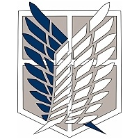

Синопсис
"Вместо прогресса человечество оказалось отброшено назад с появлением расы гигантов. Огромные гуманоиды не обладали ни речью, ни разумом, но при этом пожирали людей, как чипсы, а обычное оружие уровня XIX века оказалось бессильно. Остатки рода людского смогли выжить лишь за циклопическими стенами, которые тройным кольцом опоясали последние поля, города и деревни. Затишье продолжалось сто лет, за это время люди успокоились, армия была сокращена, а городская стража превратилась в дармоедов. Боеспособность сохранил лишь Разведкорпус – но кому нужны самоубийцы, что постоянно рискуют жизнью за стенами, когда можно спокойно сидеть за каменным забором?" "Увы, всё хорошее кончается. Ужасающий колосс сокрушил внешнюю стену Марию, и гиганты уничтожили один из городов. Мать юного Эрена погибла, отец пропал, и парень, кипящий жаждой мести, вместе с приёмной сестрой Микасой поступил в Корпус, чьи элитные бойцы могут побеждать гигантов один на один. Овладеть системой тросов, лебедок и газовых ускорителей нелегко, но лишь подобная техника помогает делать безумные прыжки и поражать монстров в затылок – единственное уязвимое место. Учиться надо быстро, ибо идет война, и действия врага становятся всё агрессивнее – будто за безмозглыми горами плоти стоит чей-то чуждый разум. Или… не такой уж чуждый? Эрену и его товарищам среди боев и сражений предстоит открыть немало пугающих тайн!"

Эрен Йегер
Главный герой истории.

Микаса Аккерман
Приёмная сестра Эрена

Армин Арлерт
Элитный солдат Разведкорпуса.

Сюжет
В центре событий «Атаки титанов» находятся трое героев: сын врача Эрен Йегер, его приемная сестра Микаса Аккерман и их друг детства Армин Арлерт. В начале мdанги титаны под предводительством невиданных ранее разумных «колоссального титана» и «бронированного титана» вторгаются в их родной округ Сингансина, проломив ворота во внешней стене — мать Эрена и Микасы погибает, а сами они вместе с Армином вынуждены искать укрытия за внутренними стенами. При этом отец Эрена, Гриша Йегер, перед отъездом оставляет сыну таинственный ключ от подвала в захваченной титанами Сингансине. Эрен клянется отомстить титанам, и все трое вступают в ряды армии.
Продолжение
 139
Глав
139
Глав
139
Глав
139
Глав
139
Глав
<В чем же заключается
гениальность сюжета?
Автор
Исаяма родился в Ояме (префектура Оита). Рисовал с детства. В старших классах школы он начал отправлять свою мангу на различные конкурсы. После того, как его короткая работа Shingeki no Kyojin была высоко оценена жюри на одном из конкурсов, он переехал в Токио и, чтобы заработать на жизнь, начал работу в интернет-кафе.В 2006 году он отправил Shingeki no Kyojin на конкурс «Гран-при журнала» издательства «Коданся» и получил награду «Хорошая работа». Он предложил свою мангу журналу Shonen Jump, но ему было отказано и предложено переработать историю и стиль, чтобы они больше подходили читательской аудитории журнала. Исаяма отказался и решил обратиться в другие издательства. В 2008 году он подал заявку на конкурс журнала Weekly Shonen Magazine издательства «Коданся» для мангак-новичков. Его работа HEART BREAK ONE получила поощрительный приз.С 2009 года его первый манга-сериал Shingeki no Kyojin начал выходить в ежемесячном Bessatsu Shonen Magazine. Он получил премию Коданся в категории «сёнэн» (для юношей) и был номинирован на ежегодную Манга Тайсё и Культурную премию Осаму Тэдзуки.В 2011 году в журнале Nikkei Entertainment был опубликован рейтинг наиболее коммерчески успешных мангак современности. Исаяма занял в рейтинге 17-е место
Трейлер к 4 сезону
Трейлер четвертого сезона вышел три месяца назад и за это время успел собрать более 12 млн просмотров на YouTube. Рейтинг сериала зашкаливает — 7 из 10 и выше на российских и зарубежных порталах о кино. Так что титаны продолжают оправдывать звание одного из самых популярных аниме в Японии. Кстати, помимо трейлера, создатели выкатили еще и впечатляющий ключевой арт.
 Смотреть трейлер>
Смотреть трейлер>
Подпишитесь для дополнительной информации
Полезная информация о пасхалок и раскрытие сюжетных дыр
Мы не отправляем спам, и никому не передаем ваши данные